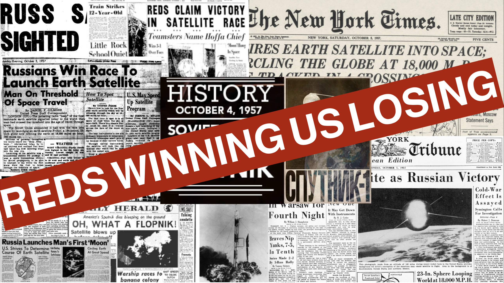

Our Response to Climate Change | HK 2100
1: Introduction to the Modern Space Race
- Renewed interest in space:
- New players: Private companies, billionaires
- Goals: Mars colonization, space tourism
- Dual narrative:
- Progress vs. escapism concerns
Space Race

2: Historical Context - The Original Space Race
- US vs. USSR competition:
- Sputnik launch (1957)
- Moon landing (1969)
- Symbolized:
- National pride
- Technological superiority
Checkout a Collage Mockup on Sputnik Crisis

3: Historical vs. Modern Space Race
- Then: Government-led
- Apollo program budget: ~$25.4 billion (~$150 billion in today’s dollars)
- Now: Private sector involvement
- SpaceX valuation: Over $100 billion as of 2021
- Competitors catching up but not fast enough
4: The Billionaire’s Space Race
- Elon Musk’s SpaceX:
- Goal: Mars colonization
- Anecdote: Launched a Tesla into space (2018)
- Jeff Bezos’ Blue Origin:
- Focus: Space tourism
- Quote: “We need to move heavy industry into space.”
- Now out: Virgin Galactic (Virgin Orbit)
5: Environmental Impact - Spacecraft Emissions
- Rocket emissions:
- Can release 300 tons of CO2 per launch
- Does not get publicized on how this can be reduced as space explorations goes full commercial as tourism
- Comparison:
- A single space shuttle launch = ~23 hours of 747 air travel emissions
6: Costs of Space Exploration
- Financials:
- NASA’s Mars Perseverance Rover mission cost: ~$2.7 billion
- Debate:
- Allocation towards terrestrial vs. space issues
6.1 Space Tourism Going Private
- Space X:
- Drastically reduced cost of space launch with Falcon rockets
- Avg. cost per launch now around $62 million (contrast to $100 to $500 million prior to Falcon)
- Blue Origin and Virgin Galactic
- Suborbital space tourism
- Ticket around $250,000 per passenger
7: Unintended Benefits of Space Exploration
- Technological spinoffs:
- GPS technology, initially for military/naval use
- Memory foam, developed for aircraft cushions
- Anecdote:
- Camera phones using tech developed for space imaging
8: The Debate on Extraterrestrial Life
- Search efforts:
- Mars rovers searching for microbial life signs
- Philosophical implication:
- “Are we alone?” A question driving human curiosity
9: Ethical Considerations of Space Colonization
- Terraforming Mars:
- Ethical debate on transforming another planet
- Protecting potential life:
- Planetary protection protocols to avoid contamination
10: The “Escape Plan” Mentality
- Critique:
- Viewing space as an “escape” from Earth’s issues
- Anecdote:
- Stephen Hawking’s warning about Earth’s fragility and the need for an alternative
- Interesting Pop Culture/Sci-Fi Reference: The Wandering Earth

11: Space Exploration and Global Power Dynamics
- New “Cold War”:
- Space as a geopolitical arena
- U.S. Space Force (2019)
- China’s Chang’e Program (2020)
- UAE’s Hope Probe (2021)
- Nations showcasing technological prowess.
- Space as a geopolitical arena
- International Competition:
- Moon and Mars missions by various countries.
- Satellite launches for national security and communication.
- Limitation of existing treaty: Outer Space Treaty (1967)
- Anti-Satellite Tests: U.S. Russia, China, India
12: Public Perception and Oversight
- Public Engagement:
- Growing interest in space tourism.
- Debates on the ethical implications of colonization.
- Oversight Concerns:
- Calls for transparent governance of space activities.
- Concerns over weaponization and space debris management.
13: Sustainability in Space Exploration
- Green Propulsion:
- Development of eco-friendly rocket fuels.
- Reduction in launch emissions.
- Space Debris Mitigation:
- Initiatives for debris tracking and removal.
- International agreements on responsible space activities.
14: Future Visions - Where Are We Heading?
- Mars Colonization:
- Plans for sustainable habitats on Mars.
- Research on closed-loop life support systems.
- Asteroid Mining:
- Potential for extracting valuable minerals.
- Ethical and legal considerations of exploiting extraterrestrial resources.
15: Reflecting on Our Place in the Universe
- Cosmic Perspective:
- The “Overview Effect”: Astronauts’ profound experience of seeing Earth from space.
- Realizing Earth’s uniqueness and vulnerability.
- Stewardship and Exploration:
- Balancing the drive to explore with the responsibility to protect our home planet and its ecosystems.
16: The Growing Problem of Space Debris
- Space Junk Stats:
- Over 500,000 pieces of debris tracked in orbit.
- Threats to satellites and the International Space Station (ISS).
- Collision Risks:
- High-speed impacts with even small debris can cause significant damage.
- Notable incidents: Damage to space shuttles, satellite collisions.
17: The Challenges of Space Waste Management
- Limited Cleanup Solutions:
- Emerging technologies for debris removal still in infancy.
- Challenges in cost-effective and scalable solutions.
- Global Efforts:
- Need for international cooperation on space waste management.
- Potential for collaborative clean-up missions and debris mitigation protocols.
18: Mars Colonization and Environmental Ethics
- Terraforming Ethics:
- Debate on the moral right to alter another planet’s environment.
- Potential impact on undiscovered Martian ecosystems.
- Precautionary Measures:
- Importance of stringent planetary protection measures.
- Ensuring Mars exploration does not harm potential life or the Martian environment.
19: Cosmic Perspective on Environmental Stewardship
- Learning from Space:
- Space missions highlighting Earth’s finite resources and delicate ecosystems.
- Insights into climate processes and environmental protection.
- Ethical Exploration:
- Advocating for responsible and ethical conduct in all space endeavors.
- Ensuring space exploration benefits humanity without compromising Earth’s ecological balance.
20. Change of Plan with role-finding this week
Experts/KOLs on:
- Space Exploration Advocacy versus
- Vowing to pause space exploration for more important issues like climate change #### General Public as:
- Educators and academics from STEM
- Policy makers and government officials
- Business leaders and entrepreneurs in energy sector
- Social scientists and ethicists
- Tech industry professionals
- Self-defined (Pick as you wish)
21. Wrapping up CCGL9065
- Foster critical thinking
- We have one topic
- From which we picked two different sides
- From each sides there are a multitude of angles of expression
- What left a mark on your perception?
- And how can you influence other people with these experience?
- What left a mark on your perception?
- From each sides there are a multitude of angles of expression
- From which we picked two different sides
Practical Question: Essay-Writing Clarification
“Student will write a final reflection (up to 750 words) leveraging understanding of arguments from class to narrate a story that they think best presents the solution that will move the most people in promoting climate change understanding, awareness and provide maximum impact.”
- YOUR response to climate change with HK 2100 in mind
- “story” not to be confused with “fiction”
- story-telling over story-creation
- Objective: Write a reflective essay (750 words max) that uses a narrative to propose a realistic climate change solution.
- Grading criteria:
- address the task aka provide an individual response in writing
- show engagement with course perspectives/materials and overarching climate change theme
- present clear, logical argument from various perspectives, including counter-evidence
- coherent structure with clear instruction and conclusion, proper paragraphing, minimal language errors and
- Final Note: The essay and visual should not only reflect academic insights but also aim to inspire broader awareness and action on climate change.